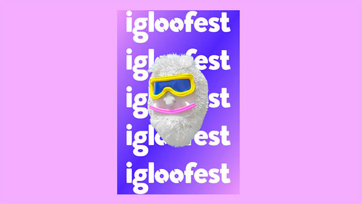

Pour cet exercice, vous devez compléter la mise en page d’un carton promotionnel de l’Igloofest.
Aperçu du résultat 👇

Matériel
Pen de départ
Couleurs 🎨
#e8b9ff
#e2a6f8
#5638f9
Médias
Logo
Requis
Faites en sorte que la couleur de fond de la page soit rose pâle.
La carte doit avoir une dimension de 400x600px, être centrée horizontalement ↔️ et avoir une marge verticale de 50px ↕️.
L'image du Yeti doit prendre toute la largeur de la carte et être affichée à 100px de son sommet.
Ajoutez un dégradé partant du coin supérieur gauche vers le coin inférieur droit ↘️ de la carte. Ce dégradé doit partir de rose à bleu avant de revenir rose afin de créer des coins rosâtres.
Ajoutez le logo de l'Igloofest comme 2e arrière-plan à la carte, par-dessus le dégradé que vous venez de créer. Faites en sorte que celui-ci prenne 85% de la largeur de la carte (sans pour autant affecter la taille du dégradé). Qu'il se répète à la verticale seulement et qu'il s'affiche au centre de la carte.
Bonus
Au survole de la carte, inversez son dégradé de sorte qu'il parte de bleu à rose avant de redevenir bleu.
Notes de cours
Linear-gradient